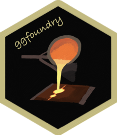
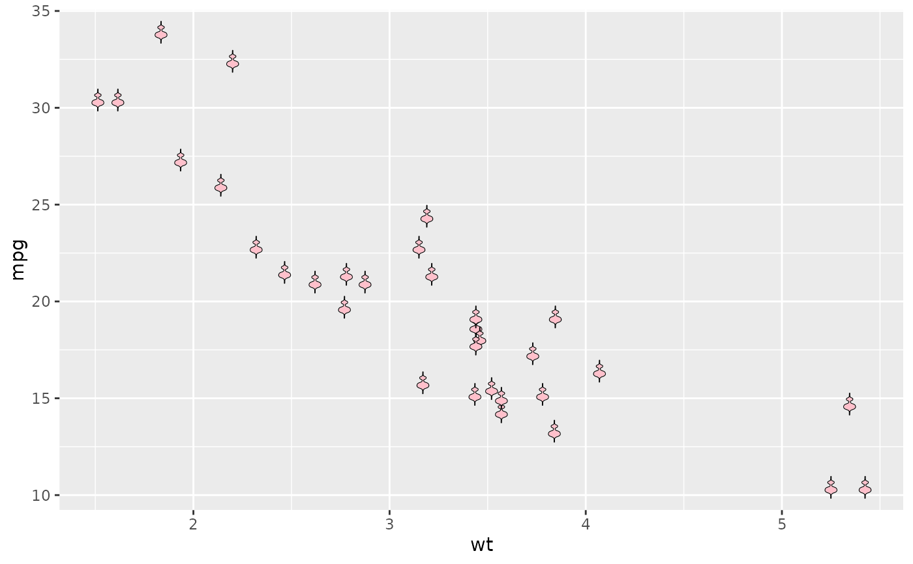
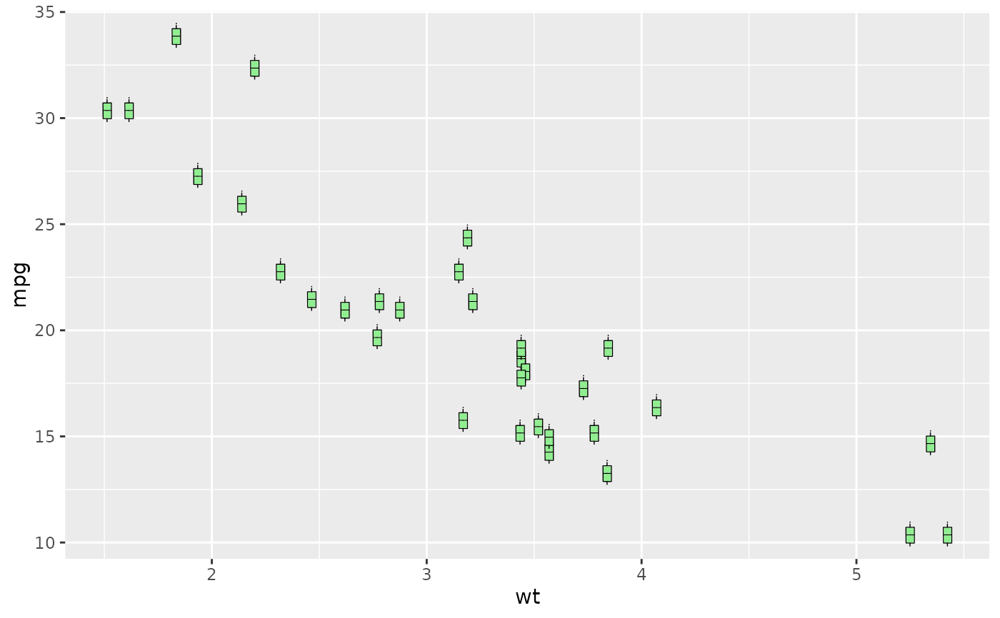
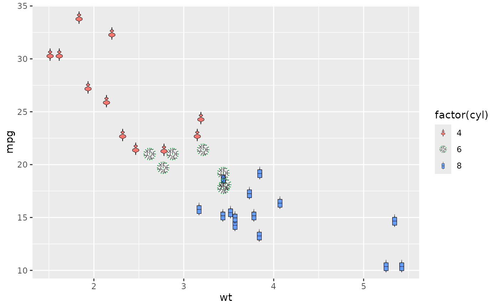
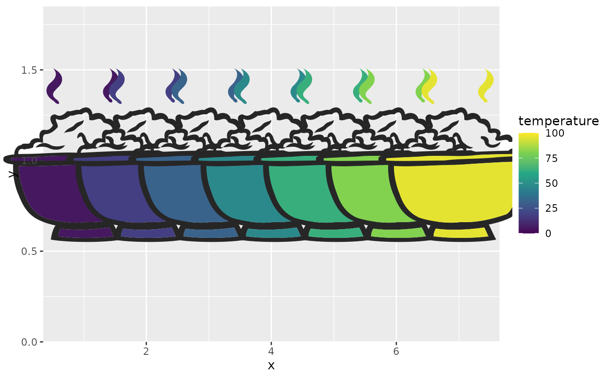

Arbitrary hand-crafted fillable shapes for ggplot2
Source:R/geom_casting.R, R/utils.R
geom_casting.Rd![[Experimental]](figures/lifecycle-experimental.svg)
Arbitrary hand-crafted colourable and fillable shapes for ggplot2.
New shapes may be feature requested via a Github issue.
Copies the grob tree, editing only the placement viewports; the styled picture grobs are shared with the template and left untouched.
Usage
geom_casting(
mapping = NULL,
data = NULL,
stat = "identity",
position = "identity",
...,
na.rm = FALSE,
show.legend = NA,
inherit.aes = TRUE
)Arguments
- mapping
A set of aesthetic mappings created by
aes(). If specified andinherit.aes = TRUE(the default), it is combined with the default mapping at the top level of the plot.- data
A data frame to use for the layer. If
NULL(the default), the data inherited from the plot is used.- stat
The statistical transformation to use on the data for this layer. The default is
ggplot2::stat_identity().- position
A position adjustment to use for overlapping points on this layer. The default is
ggplot2::position_identity().- ...
Other arguments passed on to the layer. These are often aesthetics, used to set an aesthetic to a fixed value, like
colour = "red"orsize = 0.1. They may also be parameters to the paired geom, such asnudge_x,nudge_y,hjustandvjust.sizeis panel-relative: it sets the shape's width and height as a fraction of the panel, sosize = 0.1spans a tenth of the panel, not millimetres.- na.rm
If
FALSE, the default, missing values are removed with a warning. IfTRUE, missing values are silently removed.- show.legend
Logical. Should this layer be included in the legends?
NA, the default, includes if any aesthetics are mapped.FALSEnever includes, andTRUEalways includes.- inherit.aes
If
FALSE, overrides the default aesthetics, rather than combining with them.
Details
Behind the scenes, a pair of vector images (outline & fill) are converted into Cairo graphics library SVG files, then into grid graphical objects (grobs) for use in a ggplot2 layer.
By default, the "violin" shape is used.
If the shape is mapped to a variable, e.g. aes(shape = factor(cyl)), then
scale_shape_manual() is also required to explicitly name the desired
shapes as a character vector (see examples). This is because standard
shapes are associated with a number, e.g. a circle is 19, whereas
geom_casting() shapes are associated only with character strings.
Aesthetics that vary per observation, e.g. a continuous fill, are
respected for each individual shape, whether grouping is implicit or
explicitly shared with group = 1. A fill of NA or "transparent"
renders the outline only: for shapes such as the "bowl" set, this hides
the steam while retaining the bowl outline.
In addition to the supported aesthetics below, nudge_x, nudge_y,
hjust and vjust are also respected.
Aesthetics
geom_casting() understands the following
aesthetics (required aesthetics are in bold):
xyalphaanglecolourfillgroupshapesize
Learn more about setting these aesthetics in
vignette("ggplot2-specs")
Examples
library(ggplot2)
# "Baby violin" shape by default
p <- ggplot(mtcars, aes(wt, mpg))
p + geom_casting()

# Change shape & fill
p + geom_casting(shape = "box", fill = "lightgreen")

# Shapes mapped to a variable
ggplot(mtcars, aes(wt, mpg, fill = factor(cyl))) +
geom_casting(aes(shape = factor(cyl))) +
scale_shape_manual(values = c("violin", "dendro", "box"))

# Continuous fill varies per observation, without a grouping workaround
ggplot(data.frame(x = 1:7, temperature = c(5, 18, 32, 47, 63, 81, 96)),
aes(x, 1, fill = temperature)) +
geom_casting(shape = "bowl2", colour = "#272626", size = 0.72) +
scale_fill_viridis_c(limits = c(0, 100)) +
scale_x_continuous(limits = c(0.35, 7.65), expand = expansion(mult = 0)) +
scale_y_continuous(limits = c(0, 1.85), expand = expansion(mult = 0))
